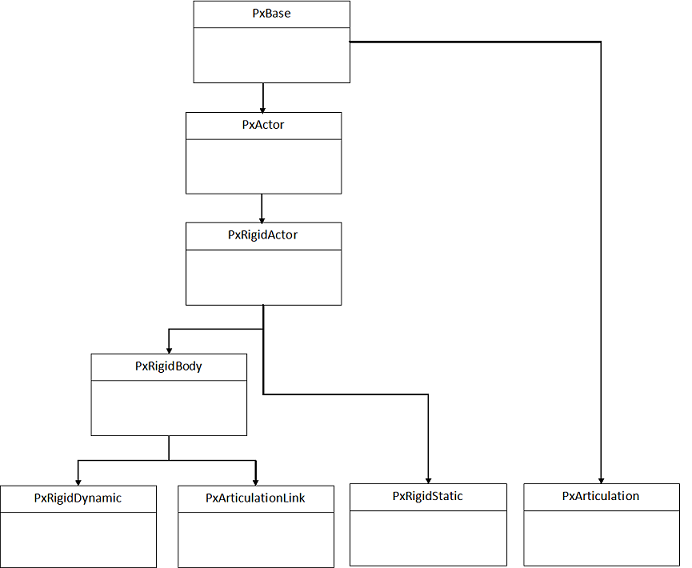
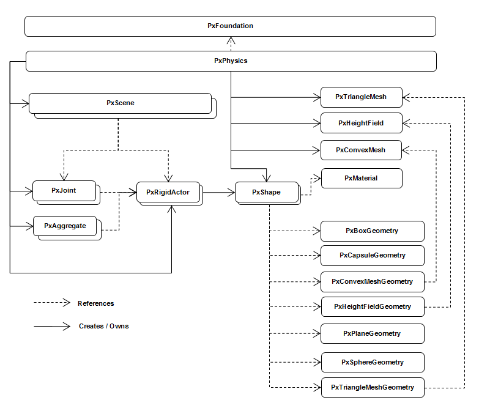

This chapter will introduce the fundamentals of simulating rigid body dynamics using the NVIDIA PhysX engine.
PhysX uses a hierarchical rigid body object/actor model, which looks like this:
| Class | Extends | Functionality |
|---|---|---|
| PxBase | N/A | Reflection/querying object types. |
| PxActor | PxBase | Actor name, actor flags, dominance, clients, aggregates, query world bounds. |
| PxRigidActor | PxActor | Shapes and transforms. |
| PxRigidBody | PxRigidActor | Mass, inertia, velocities, body flags. |
| PxRigidStatic | PxRigidActor | Interface for static body in the scene. This kind of body has implicit infinite mass/inertia. |
| PxRigidDynamic | PxRigidBody | Interface for dynamic rigid body in the scene. Introduces support for kinematic targets and object sleeping. |
| PxArticulationLink | PxRigidBody | Interface for a dynamic rigid body link in a PxArticulation. Introduces support for querying the articulation and adjacent links. |
| PxArticulation | PxBase | Defines interface for a PxArticulation. Effectively a contained referencing multiple PxArticualtionLink rigid bodies. |
The following diagram shows the relationship between the main types involved in the rigid body pipeline:
Now use the method PxScene::simulate() to advance the world forward in time. Here is simplified code from the samples' fixed stepper class:
mAccumulator = 0.0f;
mStepSize = 1.0f / 60.0f;
virtual bool advance(PxReal dt)
{
mAccumulator += dt;
if(mAccumulator < mStepSize)
return false;
mAccumulator -= mStepSize;
mScene->simulate(mStepSize);
return true;
}
This is called from the sample framework whenever the app is done with processing events and is starting to idle. It accumulates elapsed real time until it is greater than a sixtieth of a second, and then calls simulate(), which moves all objects in the scene forward by that interval. This is probably the simplest of very many different ways to deal with time when stepping the simulation forward.
To allow the simulation to finish and return the results, simply call:
mScene->fetchResults(true);
True indicates that the simulation should block until it is finished, so that on return the results are guaranteed to be available. When fetchResults completes, any simulation event callback functions that you defined will also be called. See the chapter Callback Sequence.
It is possible to read and write from the scene during simulation. The samples take advantage of this to perform rendering work in parallel with physics. Until fetchResults() returns, the results of the current simulation step are not available. So running rendering in parallel with simulation renders the actors as they were when simulate() was called. After fetchResults() returns, all these functions will return the new, post-simulate state. See the chapter Threading for more details about reading and writing while the simulation is running.
For the human eye to perceive animated motion as smooth, use at least twenty discrete frames per second, with each frame corresponding to a physics time step. To have smooth, realistic simulation of more complex physical scenes, use at least fifty frames per second.
Note
If you are making a real-time interactive simulation, you may be tempted to take different sized time steps which correspond to the amount of real time that has elapsed since the last simulation frame. Be very careful if you do this, rather than taking constant-sized time steps: The simulation code is sensitive to both very small and large time steps, and also to too much variation between time steps. In these cases it will likely produce jittery simulation.
See Simulation memory for details of how memory is used in simulation.